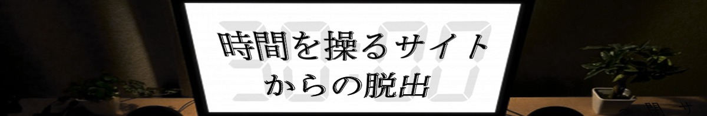

全ステージ クリア！
「帰ってこれた！カレンダーも今日の日付だ！本当にありがとう！」
友人からの連絡にホッと息をついた。
よかった。無事に友人か帰ってこられたようだ。
どうやらうまくいったようだ。緊張が解けると同時に、さまざまな疑問が浮かんできた
私達を誘導していた人が最後のメッセージを残した目的はなんなんだろう。
過去にしか向かっていなかったのにどうして現代に帰ってこられたんだろう。
友人は、本当に「現代」に帰ることができたのだろうか。
本当に今連絡しあっている友人は先ほどまで一緒に謎を解いていた友人なのだろうか。
しかし、嬉々としてタイムスリップした感想を話したがっている友人と会話していると
そんな疑問は薄れていった。
また友人と話したり遊べたりできるのだ。今までと何も変わったところはない。
未来や過去に戦争が起きようが、そんなの些細な問題でしかない。
だって、今がこの瞬間が平和なんだから。
遊んでくれてありがとう！
Special Thanks
リアル脱出ゲームとは
2004年に発表されたネットで爆発的に盛り上がった「脱出ゲーム」を、そのフォーマットそのままに現実世界に移し替えた大胆な遊びが「リアル脱出ゲーム」。マンションの1室や廃校、廃病院、そして東京ドームや六本木ヒルズなど、様々な場所で開催され、2007年に初開催して以降、現在までで累計820万人以上を動員。日本のみならず上海、台湾、シンガポールやサンフランシスコなど全世界で参加者を興奮の渦に巻き込み、男女問わずあらゆる世代を取り込む、今大注目の体験型エンターテインメント。
このゲームの企画者
企画・制作メンバーの紹介など。
シュタインズゲートやリゼロなどの時間に関連するアニメが好きなので時間に関わるストーリーを作りたいと考え今回の企画に移りました。
頭の中ではストーリーが組まれていますが、時間系の醍醐味といえば考察してもらうことにあると思ったので解釈の余地を残し伝えたいことは伝え切るという設計にしました。